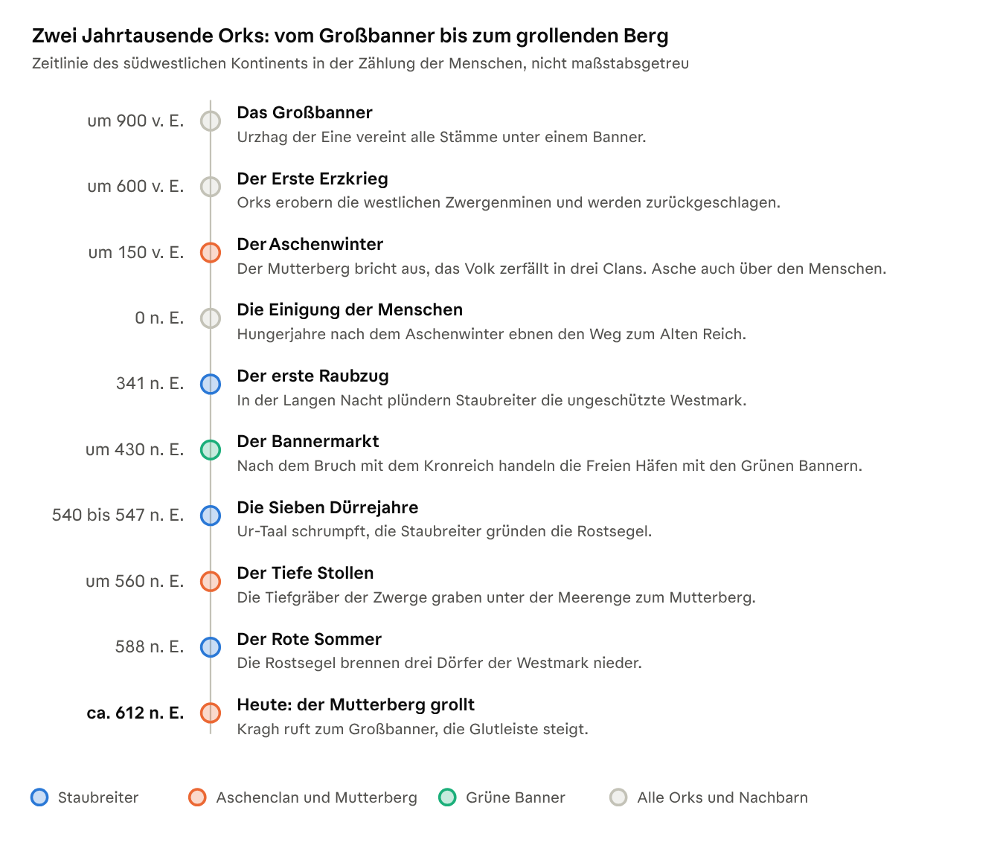
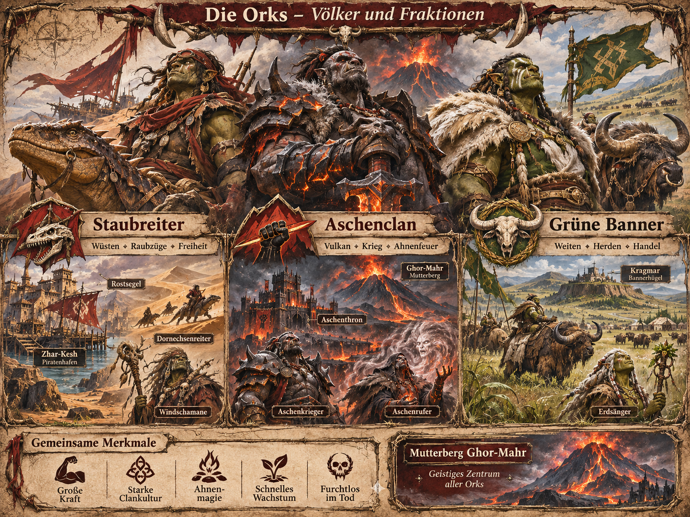

Die Orks – Völker und Fraktionen
Nov 16, 2026 · @Henry
Überblick
Die Orks sind das stärkste Kriegervolk der Welt und das einzige, mit dem die Menschen verhandeln können. Sie bewohnen den südwestlichen Kontinent zwischen Westsee, Innerem Meer und Südsee. In seiner Mitte liegt der Vulkan Ghor-Mahr, der Mutterberg. Sein letzter Ausbruch hat das Volk vor über 750 Jahren in drei Clans zerrissen, und heute grollt er wieder.
Gemeinsame Eigenschaften aller Orks
Stark und zäh: Orks sind größer und kräftiger als Menschen, heilen schnell und ertragen Hitze, Hunger und Schmerz. Menschen sagen: Elfen sind die besseren Magier, Zwerge die besseren Schmiede, Orks die stärkeren Krieger.
Kurzes, heftiges Leben: Ein Ork ist mit zwölf Jahren erwachsen und wird selten älter als fünfzig. Nach den Menschen vermehren sie sich am schnellsten.
Rang durch Taten: Kein Ork erbt seinen Platz. Wer führen will, muss es beweisen, im Kampf, in der Jagd, im Handel oder im Zweikampf. Das unterscheidet sie scharf vom Kronreich mit seinem Geburtsadel.
Keine Furcht vor dem Tod: Orks glauben, dass ein ehrenhaft Gefallener in die Glut des Mutterbergs eingeht und als Ahne weiterlebt. Deshalb verbrennen sie ihre Toten. Und deshalb findet der Kult der Bleichen Ewigkeit unter Orks kaum Anhänger: Wer den Tod nicht fürchtet, will kein ewiges Leben. Die seltene Ausnahme sind Verbannte, Orks ohne Clan, die keinen Platz mehr bei den Ahnen haben.
Zerrissen: Seit dem Aschenwinter misstrauen die Clans einander mehr als jedem fremden Volk. Ihre Fehden sind die größte Schwäche der Orks.
Aussehen: Grüne bis graue Haut, kräftige Hauer, dunkles Haar. Die Clans unterscheiden sich sichtbar: Staubreiter sind von Sonne und Sand braun gegerbt, der Aschenclan ist aschgrau und narbig, die Grünen Banner sind olivgrün und tragen bemalte Hauer.
Kultur: Orks leben in Clans aus mehreren Sippen. Wichtige Fragen entscheidet der Kreis, eine Versammlung aller Krieger und Ältesten, die im Ring um ein Feuer sitzen. Jede Sippe hat ein Banner aus Fell, Knochen und Farbe, das nie den Boden berühren darf. Taten werden als Narben getragen und in Kriegsgesängen erzählt.
Sprache: Die Orks sprechen Ghrash, eine kehlige Sprache aus kurzen, harten Silben. Die Grünen Banner beherrschen dazu Brocken der Reichszunge und das Händlerkauderwelsch der Freien Häfen.
Magie: Orks wirken Ahnenmagie. Schamanen rufen die Geister der Ahnen, die in der Asche des Mutterbergs wohnen, um Krieger zu stärken, Feinde zu schrecken oder das Wetter zu lesen. Jeder Clan hat seine eigenen Schamanen: die Windseher der Staubreiter, die Aschenrufer des Aschenclans und die Erdsänger der Grünen Banner. Ahnenmagie ist schwächer als die Magie der Elfen oder des Ordens, aber sie ist keine Totenbeschwörung: Die Ahnen dienen nur, solange man ihnen Ehre erweist.
Geschichte
Die drei Clans entstanden aus einem einzigen Orkreich, dem Großbanner, das am Ausbruch des Mutterbergs zerbrach. Die Jahreszahlen folgen der Zählung der Menschen nach der Einigung (n. E.), heute ist ungefähr 612 n. E. Die Orks selbst zählen die Winter seit dem Aschenwinter.

Zeitlinie der Orks · 10 Ereignisse
Die Feuergeburt (Mythos): Die Orks erzählen, die ersten ihres Volkes seien aus der Glut des Mutterbergs gestiegen. Darum nennen sie den Vulkan Mutter und kehren im Tod als Asche zu ihm zurück.
Die Zeit der Feuerstämme (bis um 900 v. E.): Hunderte Stämme jagen und kämpfen auf dem grünen Kontinent. Um den Vulkan entstehen die ersten Schmieden für Obsidian und Eisen. Mit den Zwergen jenseits der Meerenge gibt es erste Grenzfehden um Erz.
Das Großbanner (um 900 bis 150 v. E.): Der Kriegshäuptling Urzhag der Eine besiegt alle Clanführer im Zweikampf und vereint die Stämme unter einem einzigen Banner. Am Fuß des Mutterbergs entsteht die Halle des Großkhans. Siebenhundert Jahre lang ist der Kontinent ein Reich, das Grasland reicht damals bis an die Westsee. Um 600 v. E. setzen seine Heere über die Meerenge und erobern die westlichen Minen der Zwerge. Dieser Erste Erzkrieg dauert zwei Generationen, dann treiben die Zwerge die Orks mit dem Donnerpulver ihrer Runenmeister zurück. Seitdem sind Zwerge und Orks Erbfeinde.
Der Aschenwinter (um 150 v. E.): Der Mutterberg bricht aus. Die Halle des Großkhans und mit ihr die Linie Urzhags versinken unter Lava. Drei Jahre lang verdunkelt Asche den Himmel, das Grasland im Westen stirbt und wird zu Ödland und Wüste. Die Überlebenden zerstreuen sich in drei Richtungen: Wer am Berg bleibt, wird zum Aschenclan. Wer nach Westen ins tote Land zieht, wird zu den Staubreitern. Wer nach Süden ins grüne Land flieht, pflanzt dort die Grünen Banner. Dass der Berg nach drei Jahren wieder einschläft, verdanken die Orks auch sieben Elfen, die mit den letzten Schamanen des Großbanners am Krater singen: dem Aschenpakt.
Die Zeit der drei Feuer (150 v. E. bis heute): Jeder Clan gibt den anderen die Schuld am Untergang. Der Aschenclan nennt die anderen Flüchtlinge, die Staubreiter nennen die Grünen Banner Diebe des letzten guten Landes, die Grünen Banner halten den Aschenclan für wahnsinnig.
Der erste Raubzug (341 n. E.): Während das Heer der Menschen in der Langen Nacht im Norden gegen die Untoten kämpft, landen Staubreiter erstmals an der Westmark und plündern die ungeschützten Fischerdörfer. Die erbeuteten Boote werden zum Grundstock ihrer Flotte. Seitdem gelten die Orks dem Kronreich als Erbfeind.
Der Bannermarkt (um 430 n. E.): Nach ihrem Bruch mit dem Kronreich suchen die Freien Häfen neue Handelspartner und umsegeln den Kontinent bis an die Südküste der Grünen Banner. Am Grünmarkt tauschen Orks Felle, Horn und Fleisch gegen Stahl, Salz und Glas. Bald dienen Ork-Söldner in den Soldkompanien der Häfen.
Die Sieben Dürrejahre (540 bis 547 n. E.): Der große Brunnen von Ur-Taal schrumpft, und die Staubreiter verlieren ein Drittel ihrer Herden. Sie weichen aufs Meer aus. Aus vereinzelten Plünderern wird die Piratenflotte der Rostsegel, und die Raubzüge an der Westmark werden jährlich.
Der Rote Sommer (588 n. E.): Die Rostsegel brennen drei Dörfer der Westmark nieder. Ein Strafzug des Kronreichs scheitert, weil es keine Flotte hat und die Freien Häfen nur gegen Bezahlung helfen wollen. Seitdem zahlen einzelne Jarle der Westmark heimlich Tribut in Korn.
Der Tiefe Stollen (ab um 560 n. E.): Die Tiefgräber, die westlichste Fraktion der Zwerge, sagen sich von ihrem König los und graben unter der Meerenge nach Westen. Sie suchen eine sagenhafte Erzader unter dem Mutterberg, das Herz des Berges. Die Orks halten den Stollen für ein Gerücht.
Heute (um 612 n. E.): Der Mutterberg grollt zum ersten Mal seit dem Aschenwinter. Die Erde bebt, an seinen Flanken öffnen sich neue Glutspalten. Im Aschenclan ruft Kriegshäuptling Kragh Schlackenherz zur Rückkehr des Großbanners, und die Ahnenmutter warnt vor einem zweiten Aschenwinter. Sie hört im Berg ein Klopfen, das nicht von den Ahnen kommt: die Hacken der Zwerge.
Staubreiter
Die Staubreiter sind ein Nomadenclan aus Reitern und Piraten im Westen, der von Beute lebt, weil sein Land kaum etwas anderes hergibt. An Land reiten sie auf Dornechsen durch die Wüste, auf See fahren sie unter den Rostsegeln. Sie sind die Orkpiraten, die die Westmark der Menschen heimsuchen.
Lebensraum: Wüste und Ödland im Westen des Kontinents, entstanden aus dem Grasland, das der Aschenwinter verbrannt hat. Dazu die felsige Küste an der Westsee mit versteckten Buchten und die kleinen Inseln vor der Südwestküste. Wasser gibt es fast nur am Brunnen von Ur-Taal.
Wappen und Farben: Ein bleicher Dornechsenschädel vor einem zerfetzten roten Segel auf sandgelbem Grund. Farben: Sandgelb, Rostrot, Schwarz.
Kultur und Werte
Kein Staubreiter besitzt Land. Was zählt, sind Echsen, Schiffe und Beute.
Beute wird im Kreis geteilt. Wer gut teilt, hat Gefolgschaft, wer hortet, verliert sie.
Wasser ist heilig. Wer einen Brunnen vergiftet, wird in der Wüste ausgesetzt.
Sie verachten die Grünen Banner, weil die sich nach dem Aschenwinter das letzte gute Land genommen haben.
Ein Tribut ist für sie keine Schande, sondern Beute ohne Kampf. Wer zahlt, wird verschont, solange er zahlt.
Wahlspruch: „Was der Wind bringt, gehört uns.“
Glaube und Magie: Die Staubreiter glauben, dass die Ahnen im Wind reisen. Ihre Windseher lesen Sandstürme und Strömungen, rufen Stürme gegen feindliche Schiffe und führen die Karawanen zu verborgenem Wasser.
Herrschaft und Anführer
Die Staubreiter folgen einer Staubkhanin. Sie bleibt so lange im Amt, wie ihre Beute für alle reicht.
| Person | Rolle | Kurzbeschreibung |
|---|---|---|
| Staubkhanin Vashka Dornzahn | Herrin der Staubreiter | Kalt und berechnend, nimmt lieber Tribut als Verluste, hält den Clan durch kluge Beuteteilung zusammen |
| Kapitän Urgash Rotsegel | Herr der Rostsegel | Wildester Pirat der Westsee, führte den Roten Sommer an und hasst das Kronreich |
| Brakk der Hungrige | Junger Kriegsführer | Plant den großen Raubzug auf die Westmark und will Vashka stürzen |
| Windseherin Ashka | Oberste Windseherin | Liest im Sand, dass der Brunnen von Ur-Taal versiegen wird |
Wichtige Orte
Zhar-Kesh: Piratenhafen in einer Felsbucht an der Westsee und Hauptstadt des Clans und seine einzige Stadt aus Stein. Die übrigen Städte sind Zeltstädte an Oasen und Buchten. Hier liegen die Rostsegel und der Beutemarkt.
Brunnen von Ur-Taal: Die große Oase im Ödland, um die sich jeden Sommer alle Sippen versammeln.
Die Glasebene: Eine Ebene aus geschmolzenem Sand am Rand der Lavafelder, Zeichen des Aschenwinters.
Die Knocheninseln: Kleine Inseln vor der Südwestküste, Versteck für Beute und Gefangene.
Militär
Dornechsenreiter: Schnelle Reiter auf großen Wüstenechsen mit Wurfspießen, die stärkste Einheit des Clans.
Rostsegel: Schnelle Raubboote aus Treibholz und erbeutete Knorren der Menschen für Überfälle an Küsten.
Enterorks: Leicht gerüstete Plünderer mit Haken und Krummaxt.
Sandschützen: Bogenschützen, die aus dem Hinterhalt in den Dünen angreifen.
Windseher: Schamanen, die Sandstürme und Gegenwind rufen.
Stärken: Schnelligkeit, Raubzüge, Seemacht, Fernkampf, Hinterhalte, kämpfen gut in Wüste und Ödland.
Schwächen: Kaum Wirtschaft, wenig Nahrung und Wasser, kleine Bevölkerung, Gefolgschaft hängt an der Beute, schwach in langen Belagerungen.
Aschenclan
Der Aschenclan ist eine Kriegerkaste am Mutterberg, die nur Stärke achtet und sich als einzig wahrer Erbe des Großbanners sieht. Er hat die stärksten Krieger, die besten Schmiede und die mächtigsten Schamanen der Orks. Verhandeln will er erst, wenn ihn jemand im Feld besiegt hat.
Lebensraum: Der Vulkan Ghor-Mahr in der Mitte des Kontinents mit Lavafeldern, Aschehalden und dem Gebirge, das sich nach Süden zieht. Im Osten gehören ihm karge Grasländer und Wüste bis ans Innere Meer. Der Boden ist fruchtbar, wo die Asche alt ist, doch wenig davon ist sicher vor neuer Glut.
Wappen und Farben: Eine schwarze Faust, die eine glühende Klinge hält, vor einem roten Berg. Farben: Aschgrau, Glutrot, Schwarz.
Kultur und Werte
Der Aschenclan blieb nach dem Aschenwinter am Berg. Wer floh, gilt ihm seitdem als schwach.
Jeder Rang wird im Kreis der Asche erkämpft. Jeder Krieger darf den Häuptling einmal im Jahr zum Zweikampf fordern.
Wer einen Zweikampf verliert, schuldet dem Sieger Gefolgschaft. Das gilt auch für fremde Völker: Wer den Aschenclan im Feld schlägt, wird angehört.
Die Toten werden in den Glutspalten des Berges verbrannt. Ihre Asche bleibt als Ahnengeist am Berg.
Schmiedekunst ist heilig. Eine Klinge aus Glutstahl trägt den Namen ihres ersten Trägers.
Wahlspruch: „Nur die Asche bleibt.“
Glaube und Magie: Der Aschenclan verehrt den Mutterberg als lebendige Ahnin. Seine Aschenrufer sind die mächtigsten Schamanen der Orks. Sie rufen Ahnengeister aus der Asche, die Krieger in Kampfrausch versetzen oder als glühende Schatten selbst in die Schlacht ziehen. Sie hören auch den Berg und spüren, wann er erwacht.
Herrschaft und Anführer
Der Kriegshäuptling herrscht, solange er jeden Zweikampf gewinnt. Neben ihm spricht nur die Ahnenmutter für die Ahnen.
| Person | Rolle | Kurzbeschreibung |
|---|---|---|
| Kriegshäuptling Kragh Schlackenherz | Herr des Aschenclans | Hat nie einen Zweikampf verloren, will das Großbanner mit Gewalt neu errichten |
| Ahnenmutter Morga | Oberste Aschenruferin | Uralt und halb blind, hört den Berg erwachen und warnt vor dem zweiten Aschenwinter |
| Thrak Obsidianhand | Meisterschmied | Schmiedet Glutstahl, sucht heimlich Handel mit den Menschen, um an deren Eisen zu kommen |
| Durza die Narbige | Herausforderin | Kraghs stärkste Kriegerin, wartet auf den Tag, an dem sie ihn fordern kann |
Wichtige Orte
Ghor-Mahr, der Mutterberg: Der Vulkan in der Mitte des Kontinents, heilig für alle Orks und Sitz der Ahnengeister.
Der Aschenthron: Felsenhalle am Kraterrand und Hauptsitz des Clans, erbaut auf den Ruinen der Halle Urzhags.
Der Kreis der Asche: Ein Kampfring aus erkalteter Lava, in dem alle Zweikämpfe ausgetragen werden.
Die Schlackenschmieden: Werkstätten an den Glutspalten, in denen Glutstahl entsteht.
Der Graue Pass: Einziger Weg durch das Gebirge zu den Grünen Bannern, seit Jahrhunderten umkämpft.
Militär
Aschenkrieger: Schwer gerüstete Orks mit Glutstahlklingen, die stärksten Nahkämpfer des Kontinents.
Narbenträger: Champions, die im Kreis der Asche gesiegt haben und Zweikämpfe in der Schlacht suchen.
Aschenrufer: Schamanen, die Kampfrausch wirken und Ahnengeister rufen.
Glutschatten: Gerufene Ahnengeister, die nur eine Schlacht lang bleiben.
Schlackenwerfer: Belagerungsgerät, das glühende Schlacke auf Mauern schleudert.
Stärken: Stärkste Nahkämpfer, Moral, Ahnenmagie, Glutstahl, uneinnehmbare Bergfestung.
Schwächen: Kleine Bevölkerung, keine Flotte, kaum Fernkampf, wenig Nahrung, verhandelt erst nach einer Niederlage, Häuptling kann durch Zweikampf stürzen, lebt auf einem Vulkan, der erwacht.
Grüne Banner
Die Grünen Banner sind ein Bund sesshafter Hirtensippen im Süden und der größte, reichste und offenste der drei Clans. Sie züchten Hornbüffel auf den letzten großen Graslanden der Orks und handeln mit den Freien Häfen. Wer mit Orks Frieden schließen will, beginnt bei ihnen.
Lebensraum: Weites Grasland und fruchtbare Hügel im Süden des Kontinents, im Westen mit einem Streifen Ödland zu den Staubreitern, im Norden durch das Gebirge vom Aschenclan getrennt. Die Südküste an der Südsee hat ruhige Buchten für Handelsschiffe.
Wappen und Farben: Ein bleicher Hornbüffelschädel auf grünem Grund, umgeben von einem Ring aus geflochtenem Gras. Farben: Grasgrün, Ocker, Weiß.
Kultur und Werte
Jede Sippe hat ihr Banner, und alle Banner zusammen bilden den Bannerrat. Er wählt eine Bannerherrin oder einen Bannerherrn auf Lebenszeit.
Reichtum misst sich in Herden. Eine Hochzeit kostet zehn Büffel, eine Blutschuld hundert.
Ein Wort, das am Feuer gegeben wird, gilt. Die Grünen Banner brechen Verträge seltener als jedes andere Orkvolk, und sie erwarten dasselbe.
Fremde dürfen am Grünmarkt handeln. Viele junge Orks dienen ein paar Jahre als Söldner bei den Freien Häfen und kehren mit Gold und Geschichten zurück.
Die anderen Clans nennen sie verweichlicht. Sie selbst nennen sich die, die geblieben sind, wo das Leben ist.
Wahlspruch: „Wo Gras wächst, wachsen wir.“
Glaube und Magie: Die Grünen Banner glauben, dass die Ahnen in der Erde ruhen und durch das Gras sprechen. Ihre Erdsänger heilen Krieger und Vieh, lassen Weiden schneller wachsen und lesen im Boden, ob Feinde nahen.
Herrschaft und Anführer
| Person | Rolle | Kurzbeschreibung |
|---|---|---|
| Bannerherrin Ulma Grünhand | Sprecherin des Bannerrats | Klug und geduldig, schloss den ersten Handelsvertrag mit Thingsprecherin Solveig Valsdottir |
| Bannerführer Rukk Hornbrecher | Heerführer | Misstraut den Menschen und will die Staubreiter mit Gewalt zur Ruhe bringen |
| Oghul der Alte | Ältester Erdsänger | Spürt die Beben des Mutterbergs bis in den Süden und sucht Kontakt zur Ahnenmutter Morga |
| Zesh Silberzahn | Marktmeisterin | Leitet den Grünmarkt, kennt jeden Kapitän der Freien Häfen und ihre Schulden |
Wichtige Orte
Kragmar: Die Bannerstadt im Herzen des Graslands und Hauptsitz, ein Ring aus Langzelten und Holzhallen um den Bannerhügel.
Der Bannerhügel: Versammlungsort des Bannerrats, auf dem die Banner aller Sippen stehen.
Grünmarkt: Handelshafen an der Südküste, wo die Schiffe der Freien Häfen anlegen.
Die Weiten: Die großen Weidegründe der Hornbüffel, oft Ziel von Staubreiter-Überfällen.
Die Grenzwälle: Erdwälle am Rand des Ödlands gegen die Staubreiter.
Militär
Bannerkrieger: Speerträger mit großen Schilden, zahlreich und günstig.
Büffelreiter: Schwere Reiterei auf Hornbüffeln, verheerend im ersten Ansturm.
Schleuderer: Hirten mit Schleudern, billig und überall verfügbar.
Erdsänger: Schamanen, die Verwundete heilen und Hinterhalte spüren.
Heimkehrer: Erfahrene Söldner aus den Freien Häfen mit Stahlwaffen und Handbüchsen, teuer und selten.
Stärken: Größte Bevölkerung, reiche Nahrung, Handel, verlässliche Verträge, verzeiht Fehler.
Schwächen: Schwache Magie, kaum Flotte, offenes Land ohne Festungen, wird von beiden anderen Clans verachtet, Bannerrat entscheidet langsam.
Beziehungen
Die Orks sind nach außen ein Volk, doch jeder Clan führt seine eigenen Kriege und Verträge. Gemeinsam handeln sie nur, wenn der Mutterberg bebt oder ein fremdes Heer landet.
Untereinander
Staubreiter und Grüne Banner: Offene Feindschaft. Die Staubreiter überfallen die Herden in den Weiten, die Grünen Banner bauen Grenzwälle. Trotzdem tauschen beide in Dürrejahren heimlich Wasser gegen Vieh.
Aschenclan und Grüne Banner: Der Aschenclan hält die Grünen Banner für Flüchtlinge, die sich an die Menschen verkaufen. Am Grauen Pass wird seit Jahrhunderten gekämpft. Doch Oghul der Alte und Ahnenmutter Morga hören beide den Berg und suchen insgeheim das Gespräch.
Aschenclan und Staubreiter: Gegenseitiger Respekt unter Kriegern. Der Aschenclan kauft Beute der Rostsegel gegen Glutstahl. Die Staubreiter fürchten Kragh, folgen ihm aber nicht.
Zu den anderen Völkern
| Volk | Staubreiter | Aschenclan | Grüne Banner |
|---|---|---|---|
| Menschen | Beute und Erbfeind an der Westmark, lassen sich mit Tribut kaufen | Kaum Kontakt, verhandeln erst nach einer verlorenen Schlacht | Handelspartner der Freien Häfen, die Heimkehrer und Büffelreiter als Söldner anheuern können |
| Untote | Feind, Fischer berichten von faulenden Schiffen auf See | Todfeind, die Ahnen hassen alles, was nicht verbrennt | Feind, fürchten Menschenraub an der Küste |
| Elfen | Kaum Kontakt | Alte Verbindung durch den Aschenpakt, drei Elfen zählen zu den Ahnen | Kaufen selten Heilkräuter über die Häfen |
| Zwerge | Plündern die Erzschiffe der Tiefgräber | Erbfeind, Rivalen um Erz und Schmiedekunst | Hass bis aufs Blut, die Zwerge bewaffnen die Menschen gegen Orks |
Die Menschen: Die drei Clans reagieren so, wie es die Menschen erleben. Die Grünen Banner sind am offensten für Handel. Die Staubreiter nehmen Tribut, vor allem Korn aus dem Kronreich, und lassen die Küste in Ruhe, solange er fließt. Der Aschenclan achtet nur Stärke und hört erst zu, wenn ihn ein Menschenheer im Feld geschlagen hat. Dann gilt das Recht des Zweikampfs: Der Sieger wird angehört.
Die Untoten: Die Untoten verhandeln nicht mit Orks, und Orks wollen es auch nicht. Den Untoten sind Orks besonders wertvoll: kräftige Körper für die Krone, heißes Blut für die Erinnernden, starkes Fleisch für die Fäulnisbrut. Doch zwei Dinge schützen die Orks. Sie verbrennen ihre Toten, sodass kaum ein Ork als Gebundener aufsteht. Und weil sie den Tod nicht fürchten, findet der Kult der Bleichen Ewigkeit kaum Anhänger, also kann die Krone fast keine Draugr unter Orks schaffen. Gegen Orks bleibt den Untoten nur die offene Eroberung, dazu kommen Ereignisse wie faulende Schiffe an der Ork-Küste. Nur wer auf verseuchtem Land stirbt, erhebt sich trotz Verbrennung als Gebundener.
Die Zwerge: Die Zwerge jenseits der Meerenge im Osten sind die Erbfeinde aller Orks. Am nächsten liegen die Tiefgräber, die Bergleute der Zwerge. Seit dem Ersten Erzkrieg um 600 v. E. streiten beide Völker um Erz und den Ruf der besten Schmiede, und zwergische Waffen und Schwarzpulver helfen den Menschen gegen die Orks. Seit um 560 n. E. graben die Tiefgräber den Tiefen Stollen unter der Meerenge hindurch bis unter den Mutterberg. Für den Aschenclan ist das eine Schändung der Ahnen, für alle Clans eine tödliche Gefahr: Der Stollen weckt den Berg. Die Zwerge wissen das, doch ihre Gier nach den wertvollen Erzen ist größer. Orks und Zwerge hassen sich bis aufs Blut, und zwischen ihnen gibt es keine Verhandlung.
Die drei Fraktionen der Zwerge: Den Orks am nächsten sind die Tiefgräber mit ihrem Erzhafen und der Erzflotte, Ziel der Rostsegel. Das Tiefe Königreich in der Mitte verurteilt den Stollen öffentlich, kauft aber heimlich sein Erz, und seine Eisenwacht hält die Pässe. Die Runenschmiede im Osten schmiedet Runenwaffen und Schwarzpulver und ist die Rivalin des Aschenclans um den Ruf der besten Schmiede. Das Erz aus dem Stollen, die Tiefenglut, ist die erstarrte Glut des Mutterbergs, in der die Ahnen wohnen. Jeder Brocken, den die Zwerge fördern, reißt ein Stück Ahnen aus dem Berg. Die Zwerge führen den Zweiten Erzkrieg genauso gegen die Orks, und vereint können sie den Stollen mit der Siegelrune verschließen. Ihre Gier misst das Erzfieber, eine eigene Leiste von 0 bis 100 (heute 45). Je höher es steigt, desto schneller steigt die Glutleiste. Die Orks können es nicht senken, denn mit Zwergen gibt es keine Verhandlung. Jeder Angriff auf den Stollen hebt es sogar um 10, weil die Zwerge ihr Erz zurückwollen. Das ist das Dilemma der Clans: Ein Einsturz des Stollens senkt die Glut sofort, macht die Zwerge aber gieriger. Einzelheiten stehen im Zwergen-Doc: Die Zwerge – Völker und Fraktionen
Die Elfen: Orks und Elfen verbindet der Aschenpakt. Als der Mutterberg um 150 v. E. ausbrach, fiel seine Asche bis auf den Weltenbaum der Elfen und tötete einen Ast. Gegen den Willen ihres Rats segelte die Baumsängerin Ilvara mit sechs Gefährten zum Mutterberg und sang mit den letzten Schamanen des Großbanners das erste Ahnenfeuer. Der Berg schlief ein, drei Elfen blieben in der Glut. Beide Völker haben es fast vergessen: Der Rat der Elfen verschwieg den Pakt, und dem Aschenclan gilt fremde Hilfe als Schwäche. Nur ein Ahnenlied erzählt davon: „Als der Berg die Welt verschlang, kamen Grüne ohne Waffen und sangen mit der Asche. Drei blieben bei den Ahnen.“ Ahnenmutter Morga kennt die ganze Geschichte.
Was daraus folgt: Wer den Namen der drei Elfen kennt, ist für den Aschenclan kein Fremder. Mit einem Zweig des Aschenastes hört der Aschenclan die Elfen einmal pro Spiel an, ohne vorher eine Schlacht verloren zu haben (Aschenschuld). Baumsänger und Aschenrufer können gemeinsam das Aschenlied singen, das die Glutleiste um 15 senkt. Im Vertrag „Asche gegen Saat“ liefern Orks alte Asche, die den Weltenbaum heilt, und erhalten Heilkräuter und Grünheiler. Ein Bündnis gibt es auch mit Elfen nicht, nur Verträge und gemeinsame Schlachten, etwa gegen den Tiefen Stollen oder die Untoten. Wenn der Berg erwacht, stirbt der Baum: Darum haben beide Völker denselben Feind. Einzelheiten stehen im Elfen-Doc.
Spielwerte
Die Werte folgen demselben System wie bei Menschen und Untoten: Skala 0 (keine) bis 5 (herausragend), jede Fraktion hat zusammen 18 Punkte. Die Schwierigkeit folgt demselben Muster: eine Massenfraktion für Einsteiger, eine bewegliche Fraktion, die Geschick verlangt, und eine teure Elitefraktion.
| Wert | Grüne Banner | Staubreiter | Aschenclan |
|---|---|---|---|
| Schwierigkeit | Leicht | Mittel | Schwer |
| Nahkampf | 4 | 3 | 5 |
| Fernkampf | 2 | 4 | 1 |
| Magie | 1 | 1 | 3 |
| Seemacht | 1 | 4 | 0 |
| Wirtschaft | 3 | 1 | 2 |
| Bevölkerung | 5 | 2 | 2 |
| Moral | 2 | 3 | 5 |
| Summe | 18 | 18 | 18 |
Schwierigkeitsgrade
Grüne Banner, leicht: Viele Krieger, viel Nahrung und verlässliche Handelspartner. Verluste sind schnell ersetzt, Verträge mit den Menschen sind leicht zu bekommen. Ideal für Einsteiger.
Staubreiter, mittel: Stark nur, wenn man schnell zuschlägt und sich zurückzieht, bevor der Feind sich sammelt. Die Kriegsbanden verlangen ständig Beute, und man muss abwägen zwischen Raubzug und Tribut.
Aschenclan, schwer: Mächtige, aber wenige Einheiten auf einem Vulkan mit wenig Nahrung. Diplomatie ist erst nach einer Schlacht möglich, und jede Niederlage gefährdet den Häuptling selbst. Fehler sind kaum zu korrigieren.
Fraktionsboni und Ressourcen
Grüne Banner, „Wo Gras wächst“: Verträge mit anderen Völkern kosten 25 % weniger Ansehen. Erdsänger heilen benachbarte Einheiten jede Runde. Neue Ressource Herden: Sie wachsen jede Runde auf Grasland um 10 %, ernähren das Heer, bezahlen Büffelreiter und dienen als Handelsware. Überfälle und Ascheregen töten Herden.
Staubreiter, „Was der Wind bringt“: Einheiten bewegen sich in Wüste und Ödland 1 Feld weiter. Schiffe können Küstenprovinzen plündern, ohne zu landen. Neue Ressource Beute: Sie kommt aus Raubzügen und Tribut. Jede Runde verlangen die Kriegsbanden Beute als Anteil. Reicht sie nicht, laufen Einheiten davon.
Aschenclan, „Nur die Asche bleibt“: Einmal pro Schlacht kann ein Narbenträger den feindlichen Anführer zum Zweikampf fordern. Gewinnt er, flieht ein Teil des feindlichen Heeres. Einheiten fliehen nie, solange ein Aschenrufer in der Nähe ist. Neue Ressource Ruhm: Er steigt mit Siegen und gewonnenen Zweikämpfen, ruft Glutschatten und rekrutiert Narbenträger. Sinkt er zu tief, fordert eine Herausforderin den Häuptling, und der Clan droht in einen Bruderkrieg zu fallen.
Gemeinsamer Volksbonus Orks, „Keine Furcht vor dem Tod“: Gefallene Orks werden verbrannt und können nicht als Untote zurückkehren, außer sie sterben auf verseuchtem Land: Dort gilt die Fäulnis, und auch Orks erheben sich als Gebundene. Der Kultwert steigt in Orkprovinzen nur durch Verbannte und nur sehr langsam. Nach jeder gewonnenen Schlacht erhalten Orkeinheiten für eine Runde Kampfrausch (+25 % Schaden).
Städte, Dörfer und Häfen
Von Henry festgelegt (16.11.2026): Jede Fraktion hat eine Hauptstadt und bis zu zehn Städte. Zu jedem Gebiet gehören eigene Dörfer. Hauptstadt, Städte und Dörfer produzieren die Ressourcen der Fraktion. Nach der Vereinigung fließen ihre Erträge in einen gemeinsamen Vorrat des ganzen Volkes.
Hauptstadt: Sie produziert am meisten, ist Sitz der Anführer und bildet die stärksten Einheiten und Helden aus. Fällt sie, hat die Fraktion verloren.
Städte: Sie produzieren Gold, Truppen und die eigene Ressource der Fraktion. Eine eroberte Stadt produziert für den Eroberer.
Dörfer: Sie liefern Nahrung und Rohstoffe wie Holz, Stein und Erz an die Städte ihres Gebiets. Wer die Dörfer eines Gebiets verliert, schwächt dessen Städte.
Häfen: Nur eine Stadt am Meer kann einen Hafen haben, auch die Hauptstadt. Häfen bringen Handel und Gold. Nur über einen Hafen können Armeen, Helden und Heldengruppen über das Meer gebracht werden. Wer keinen eigenen Hafen hat, braucht einen Verbündeten oder Vertragspartner mit Hafen und Schiffen.
| Fraktion | Hauptstadt | Häfen | Was die Siedlungen liefern |
|---|---|---|---|
| Grüne Banner | Kragmar | Grünmarkt an der Südküste, wo die Schiffe der Freien Häfen anlegen | Weidedörfer liefern Herden, Städte Büffelreiter und Handelsgold |
| Staubreiter | Zhar-Kesh, ihre einzige Stadt aus Stein | Zhar-Kesh und Piratenbuchten an der Westsee, Heimat der Rostsegel. Ihre übrigen Städte sind Zeltstädte an Oasen und Buchten | Raubzüge über die Häfen bringen Beute, Oasendörfer wenig Nahrung |
| Aschenclan | Aschenthron | Keine Häfen, der Clan lebt im Binnenland am Mutterberg | Kampfplätze und Ahnenstätten liefern Ruhm, Bergdörfer Erz und Obsidian, aber wenig Nahrung |
Der Aschenclan kommt nur mit den Schiffen der Staubreiter oder der Grünen Banner über das Meer. Wer gegen die Zwerge in den Zweiten Erzkrieg ziehen will, braucht deshalb einen Vertrag mit einem anderen Clan oder das Großbanner.
Die Städte der Fraktionen
Jede Fraktion hat eine Hauptstadt und zehn Städte. „Hafen“ heißt, dass die Stadt am Meer liegt und einen Hafen hat.
Grüne Banner: Hauptstadt Kragmar. Städte: Grünmarkt (Hafen), Mog-Tash (Hafen), Zarguth (Hafen), Hornfurt, Grenzwall, Dhurak, Gharn, Rukmar, Weitenlager, Sturrak.
Staubreiter: Hauptstadt Zhar-Kesh (Hafen). Zeltstädte: Ur-Taal (an der großen Oase), Knochenholm (Hafen, auf den Knocheninseln), Rostbucht (Hafen), Skarrak (Hafen), Glasfurt (an der Glasebene), Vash-Mor, Sandzahn, Dorn-Ghul, Durstlager, Khesh-Ura.
Aschenclan: Hauptstadt Aschenthron. Städte: Schlackenhall (bei den Schlackenschmieden), Graupass (am Grauen Pass), Ghor-Dum, Krakhal, Obsidianfels, Lavagrund, Brandmal, Urzhagstor, Kraterwacht, Rauchkluft. Keine davon hat einen Hafen.
Die Dörfer der Fraktionen
Zu jeder Stadt gehören Dörfer, zur Hauptstadt drei, zu jeder anderen Stadt zwei. Bei den Staubreitern sind es Lager. In Klammern steht, was das Dorf liefert.
Grüne Banner
| Stadt | Dörfer und Ertrag |
|---|---|
| Kragmar (Hauptstadt) | Büffelring (Herden), Hornweide (Herden), Lederzelt (Leder) |
| Grünmarkt | Fischlager (Fisch), Salzpfanne (Salz) |
| Mog-Tash | Krabbenlager (Fisch), Dünenweide (Herden) |
| Zarguth | Bucht-Gor (Fisch), Tanglager (Nahrung) |
| Hornfurt | Furtweide (Herden), Schilf-Rak (Nahrung) |
| Grenzwall | Wallweide (Herden), Späherhügel (Späher) |
| Dhurak | Gras-Dhur (Herden), Hirse-Ghar (Hirse) |
| Gharn | Gharnweide (Herden), Knochenpfahl (Werkzeug) |
| Rukmar | Rukweide (Herden), Wildacker (Korn) |
| Weitenlager | Weiter Ring (Herden), Wasserloch (Wasser) |
| Sturrak | Sturweide (Büffelreiter), Fellzelt (Felle) |
Staubreiter
| Stadt | Lager und Ertrag |
|---|---|
| Zhar-Kesh (Hauptstadt) | Beutemarkt (Beute), Rostwerft (Schiffe), Felsbucht (Fisch) |
| Ur-Taal | Dattelhain (Nahrung), Brunnenring (Wasser) |
| Knochenholm | Gefangenenlager (Beute), Knochenstrand (Fisch) |
| Rostbucht | Kaperlager (Beute), Teergrube (Teer) |
| Skarrak | Skar-Strand (Fisch), Wrackbucht (Beute) |
| Glasfurt | Glasgrube (Glas), Sandlager (Stein) |
| Vash-Mor | Echsenlager (Reittiere), Dornbusch (Nahrung) |
| Sandzahn | Skorpionsgrund (Gift), Wüstenquell (Wasser) |
| Dorn-Ghul | Kaktushain (Nahrung), Geierfels (Späher) |
| Durstlager | Salzkruste (Salz), Lehmbrunnen (Wasser) |
| Khesh-Ura | Raubpfad (Beute), Ziegenfels (Ziegen) |
Aschenclan
| Stadt | Dörfer und Ertrag |
|---|---|
| Aschenthron (Hauptstadt) | Kreis der Asche (Ruhm), Ahnenglut (Ruhm), Kraterhof (Ziegen) |
| Schlackenhall | Glutspalt (Glutstahl), Schlackenhalde (Erz) |
| Graupass | Passwacht (Ruhm), Felsziege (Ziegen) |
| Ghor-Dum | Lavaquell (Obsidian), Rauchloch (Schwefel) |
| Krakhal | Kampfgrube (Ruhm), Pilzhöhle (Nahrung) |
| Obsidianfels | Glasader (Obsidian), Schwarzklippe (Stein) |
| Lavagrund | Aschenacker (Gerste), Glutfeld (Erz) |
| Brandmal | Narbenring (Ruhm), Brandweide (Ziegen) |
| Urzhagstor | Ahnenstein (Ruhm), Torwacht (Stein) |
| Kraterwacht | Kraterrand (Schwefel), Glutauge (Späher) |
| Rauchkluft | Kluftpilz (Nahrung), Eisenader (Erz) |
Spielziele und Hauptquests
Das Hauptziel aller Orks ist, das Großbanner neu zu errichten und den zweiten Aschenwinter zu überstehen. Gewonnen hat, wer die drei Clans unter seinem Banner vereint und den Mutterberg bändigt oder seinem Volk eine neue Heimat erobert.
Die Glutleiste
Neben den Bedrohungsleisten der Menschen läuft eine eigene Leiste von 0 bis 100: die Glut des Mutterbergs. Sie zeigt, wie nah der zweite Aschenwinter ist, und bedroht alle lebenden Völker. Nur die Untoten trifft sie nicht.
| Glutleiste | |
|---|---|
| Steigt durch | Jede Runde ein wenig, schneller durch Bruderkriege zwischen den Clans, verletzte Ahnenstätten, Schlachten am Berg und jede Runde, in der der Tiefe Stollen der Zwerge offen ist. Dazu das Erzfieber der Zwerge: ab 50 jede Runde +1, ab 75 jede Runde +2 |
| Sinkt durch | Ahnenfeuer, ein Ritual am Mutterberg, das Aschenrufer, Windseher und Erdsänger gemeinsam vollziehen, den Einsturz des Tiefen Stollens (Neben-Hauptquest) und Hilfe anderer Völker: Korn und Vieh für hungernde Clans, Schutz der Ahnenstätten oder ein Angriff auf den Stollen, dazu das Aschenlied mit den Baumsängern der Elfen sowie das Versiegeln des Stollens (−10) und die Siegelrune der vereinten Zwerge (−20) |
| Bei 50 | Ascheregen über allen Kontinenten der Lebenden: Herden, Ernten und Nahrung schrumpfen bei Orks, Menschen, Elfen und Zwergen, Hunger treibt die Ork-Bedrohung der Menschen nach oben |
| Bei 100 | Der zweite Aschenwinter: Alle Orkspieler verlieren. Menschen, Elfen und Zwerge verlieren für mehrere Runden die Hälfte ihrer Nahrung und Bevölkerung. Die Untoten bleiben unberührt |
Verhandlung mit den Menschen
Die Orks sind das einzige Volk, mit dem die Menschen über Frieden verhandeln können. Ein Bündnis schließen Orks mit keinem anderen Volk, nur Verträge oder eine gemeinsame Schlacht gegen einen gemeinsamen Feind. Jeder Vertrag senkt die Ork-Bedrohungsleiste der Menschen. Jeder gebrochene Vertrag und jeder Raubzug hebt sie.
| Vertrag | Grüne Banner | Staubreiter | Aschenclan |
|---|---|---|---|
| Handel | Jederzeit, am liebsten mit den Freien Häfen | Nur Beutemarkt in Zhar-Kesh | Erst nach einer Schlacht |
| Tribut | Lehnen ab, sie wollen Handel statt Almosen | Bevorzugt, Korn oder Gold senkt die Raubzüge sofort | Gilt als Schwäche, Tribut steigert die Bedrohung |
| Grenzziehung | Möglich, wenn Weiden gesichert sind | Nur gegen Weiderecht oder Wasser | Erst nach einer Schlacht |
| Frieden | Möglich nach einem Handelsvertrag | Möglich, solange Tribut fließt | Nur nach einer Niederlage im Feld oder einem verlorenen Zweikampf |
Für die Menschen gilt: Die Ork-Bedrohung sinkt auf null, wenn jeder der drei Clans besiegt ist oder einen Frieden unterschrieben hat. Spielt jemand die Orks, zeigt die Ork-Leiste der Menschen dessen Fortschritt im Krieg. Sinkt sie auf null, weil alle drei Clans Frieden geschlossen haben, endet für einen Orkspieler nur der Weg des Sturms. Der Weg der Asche bleibt offen. Werden alle drei Clans vernichtet, egal von wem, fällt die Ork-Bedrohung der Menschen sofort auf null.
Unter einem Banner vereinen: Das Großbanner
Jeder Clan kann die anderen beiden auf zwei Wegen gewinnen:
Eroberung: Den Hauptsitz des anderen Clans einnehmen (Kragmar, Zhar-Kesh oder den Aschenthron). Der Clan wird zum unterworfenen Gefolgsclan. Schnell, aber jeder Bruderkrieg hebt die Glutleiste.
Diplomatie: Erst Handel, dann ein Blutbund, dann der Bannerschwur am Mutterberg. Der Aschenclan nimmt Diplomatie nur an, wenn er vorher eine Schlacht gegen diesen Clan verloren hat oder sein Häuptling im Kreis der Asche besiegt wurde. Die Staubreiter brauchen genug Herden oder Beute als Brautpreis. Die Grünen Banner verlangen, dass Raubzüge gegen sie enden.
Ein vereintes Orkvolk erhält den Bonus „Das Großbanner“: Alle Einheiten aller Clans sind verfügbar, und erst dann kann das Ahnenfeuer die Glutleiste auf null senken.
Hauptquest Grüne Banner (leicht): „Wo Gras wächst“
Die Weiten schützen: Die Herden vor den Überfällen der Staubreiter sichern und die Grenzwälle vollenden.
Der Grünmarkt: Den Handelsvertrag mit den Freien Häfen zu einem Frieden ausbauen. Das spiegelt die Quest „Der Handel mit den Grünen Bannern“ der Häfen.
Der Graue Pass: Den Aschenclan in einer offenen Schlacht schlagen, damit er die Grünen Banner anhört.
Wasser gegen Vieh: Die Staubreiter mit Herden und Weiderecht in den Bund holen oder Zhar-Kesh einnehmen.
Das Großbanner: Alle Clans vereinen und mit dem Ahnenfeuer die Glutleiste auf null senken.
Hauptquest Staubreiter (mittel): „Was der Wind bringt“
Der leere Brunnen: Herausfinden, warum der Brunnen von Ur-Taal versiegt, und neues Wasser finden.
Brakks Aufstand: Den jungen Kriegsführer niederwerfen oder ihm den großen Raubzug geben.
Feuer an der Westmark: Die Westmark ausplündern oder dem Kronreich einen dauerhaften Korntribut abpressen. Das spiegelt die Quest „Feuer an der Westmark“ des Kronreichs.
Das grüne Land: Die Grünen Banner unterwerfen oder sich Weiderecht in den Weiten erhandeln, dann den Aschenclan im Feld oder im Zweikampf bezwingen.
Eine neue Heimat: Alle Clans vereinen und entweder die Glutleiste auf null senken oder einem anderen Volk Land als neue Heimat abnehmen, durch Vertrag oder Eroberung bis zu seiner Vernichtung.
Hauptquest Aschenclan (schwer): „Nur die Asche bleibt“
Der Kreis der Asche: Durzas Herausforderung bestehen oder sie als neue Häuptlingin spielen.
Der grollende Berg: Mit Ahnenmutter Morga in den Krater steigen und entdecken, dass der Tiefe Stollen der Zwerge den Mutterberg weckt. Morga erinnert sich an den Aschenpakt und kann die Elfen rufen.
Glutstahl und Eisen: Genügend Erz sichern, am besten durch die ersten Stufen des Zweiten Erzkriegs gegen die Zwerge, sonst durch Handel mit den Menschen nach einer gewonnenen Schlacht.
Die Clans beugen: Die Grünen Banner und die Staubreiter im Feld schlagen, bis beide den Bannerschwur leisten.
Das Ahnenfeuer: Mit allen drei Schamanenschulen das Ritual am Mutterberg vollziehen und die Glutleiste auf null senken.
Neben-Hauptquest aller Clans: „Der Zweite Erzkrieg“
Jeder Ork-Clan kann neben seiner Hauptquest die Zwerge besiegen. Frieden mit den Zwergen gibt es nicht: Beide Völker hassen sich bis aufs Blut, und nur die Vernichtung bringt Frieden. Für den Sieg ist das keine Pflicht, aber es bremst den Mutterberg und nimmt den Menschen ihre wichtigsten Waffenlieferanten. Die Zwerge führen denselben Krieg von ihrer Seite als eigene Neben-Hauptquest.
Das Klopfen im Berg: Beweisen, dass der Tiefe Stollen existiert. Aschenrufer hören ihn, Erdsänger spüren ihn im Boden, Staubreiter kapern ein Zwergenschiff mit den Stollenplänen.
Über die Meerenge: Einen Brückenkopf an der Küste der Tiefgräber errichten. Die Staubreiter schaffen das mit den Rostsegeln, die anderen Clans brauchen deren Schiffe oder müssen durch den Stollen selbst angreifen.
Der Tiefe Stollen: Den Stollen erstürmen und einstürzen lassen. Die Glutleiste sinkt sofort um 20 und steigt danach nur noch halb so schnell.
Die Minen der Tiefgräber: Die Tiefgräber besiegen und ihre Minen einnehmen. Alle Clans erhalten Erz, und der Aschenclan kann Glutstahl in Masse schmieden.
Der Fall der Zwerge: Das Tiefe Königreich und die Runenschmiede vernichten. Erst dann ist der Erzkrieg vorbei.
Belohnung „Erz der Tiefe“: Sind die Zwerge besiegt, liefern sie den Menschen keine Waffen und kein Schwarzpulver mehr. Alle Orkeinheiten mit Glutstahl erhalten +10 % Schaden.
Siegbedingung: Alle drei Clans unter einem Banner und entweder die Glutleiste auf null (Weg der Asche) oder eine eroberte oder vertraglich gewonnene neue Heimat bei einem anderen Volk (Weg des Sturms). Auf dem Weg des Sturms kann jedes Volk vernichtet werden.
Niederlage: Die Glutleiste erreicht 100, der eigene Hauptsitz fällt an ein anderes Volk, beim Aschenclan sinkt der Ruhm auf null, bei den Staubreitern die Beute oder bei den Grünen Bannern die Herden.
Das Herz des Berges: Heben die Zwerge das Herz des Berges aus dem Mutterberg, erlischt der Vulkan. Die Glutleiste fällt sofort auf null, aber die Ahnen der Orks sind für immer verloren. Damit ist der Weg der Asche für jeden Orkspieler verschlossen, nur der Weg des Sturms bleibt. So kann die Glut auch dann noch gestoppt werden, wenn es keine Orks mehr gibt, die das Ahnenfeuer entzünden.
Unterworfen oder Partner: Wer seinen Hauptsitz an einen anderen Ork-Clan verliert, wird ihm unterworfen und hat verloren. Wer sich durch Diplomatie oder Zweikampf-Eid anschließt, wird Partner und gewinnt mit.
Kein gemeinsamer Sieg mit anderen Völkern: Menschen, Elfen und Zwerge können im Bündnis gemeinsam gewinnen. Die Orks gewinnen immer allein, auch wenn sie mit anderen Völkern Verträge haben.
Aufhänger für Geschichten
Der grollende Berg: Der Mutterberg erwacht, doch die Ahnenmutter spürt, dass etwas unter ihm gräbt. Es sind die Tiefgräber der Zwerge, die unter der Meerenge nach dem Herz des Berges graben. Die Zwerge wissen genau, was sie da wecken, doch das Erz ist ihnen mehr wert als jedes Orkleben.
Brakks Raubzug: Brakk der Hungrige sammelt die Rostsegel für den größten Angriff auf die Westmark seit dem Roten Sommer. Das Kronreich braucht Schiffe, die nur die Freien Häfen haben.
Der Korntribut: Jarle der Westmark zahlen den Staubreitern heimlich Korn. Erfährt König Harald IV. davon, gilt es als Verrat. Erfährt es Jarl Ragnvald, wird es ein Druckmittel.
Der Schmied und die Menschen: Thrak Obsidianhand braucht Eisen und schreibt heimlich an die Freien Häfen. Für Kragh wäre das Verrat am Recht der Stärke.
Zwei Schamanen: Oghul der Alte und Ahnenmutter Morga treffen sich nachts am Grauen Pass, während ihre Clans dort kämpfen. Nur gemeinsam können sie das Ahnenfeuer entzünden.
Das faulende Schiff: Fischer der Knocheninseln finden ein Wrack voller zusammengenähter Leichen. Die Fäulnisbrut hat die Orks entdeckt.
Drei bei den Ahnen: Ahnenmutter Morga schickt eine Botin über das Meer zu den Elfen. Sie bringt einen Splitter Obsidian, in dem ein elfisches Blatt eingeschlossen ist, und einen Namen aus dem Ahnenlied. Kragh hielte das für Verrat.
Offene Designfragen
Elfen: Geklärt: Die alte Verbindung ist der Aschenpakt (siehe „Die Elfen“ unter Beziehungen und das Elfen-Doc).
Zwerge: Geklärt: Die drei Fraktionen der Zwerge stehen im Zwergen-Doc (siehe „Die drei Fraktionen der Zwerge“ unter Beziehungen). Von Henry festgelegt: Die Tiefenglut ist die erstarrte Glut der Ork-Ahnen.
Von Henry festgelegt
Der Mutterberg bedroht alle Völker außer den Untoten. Andere Völker können die Glutleiste auch senken, und sie steht im Menschen-Doc.
Frieden mit allen drei Clans beendet für einen Orkspieler nur den Weg des Sturms, der Weg der Asche bleibt offen.
Die Orks haben keine Untoten-Leiste. Gegen Orks bleibt den Untoten nur die Eroberung.
Auf verseuchtem Land erheben sich auch Orks als Gebundene.
Orks schließen mit anderen Völkern keine Bündnisse, nur Verträge oder gemeinsame Schlachten gegen gemeinsame Feinde.
Die Zwerge wecken mit ihrem Stollen den Mutterberg. Sie wissen es, aber ihre Gier nach Erz ist stärker.
Orks und Zwerge hassen sich bis aufs Blut. Nur die Vernichtung bringt Frieden.
Jedes Volk kann vernichtet werden.
Die Freien Häfen können Heimkehrer und Büffelreiter der Grünen Banner anheuern.
Orks und Elfen haben eine alte Verbindung: den Aschenpakt.
Der Kult wirkt unter Orks nur selten, bei Verbannten ohne Clan.
Die Zwerge zu besiegen ist eine Neben-Hauptquest aller Clans.
Bildtafeln
Die Bildtafel fasst die drei Clans, ihre Orte und Einheiten und den Mutterberg zusammen. Die Windschamanen auf der Tafel sind die Windseher der Staubreiter. Wo die Tafel vom Text abweicht, gilt der Text.
